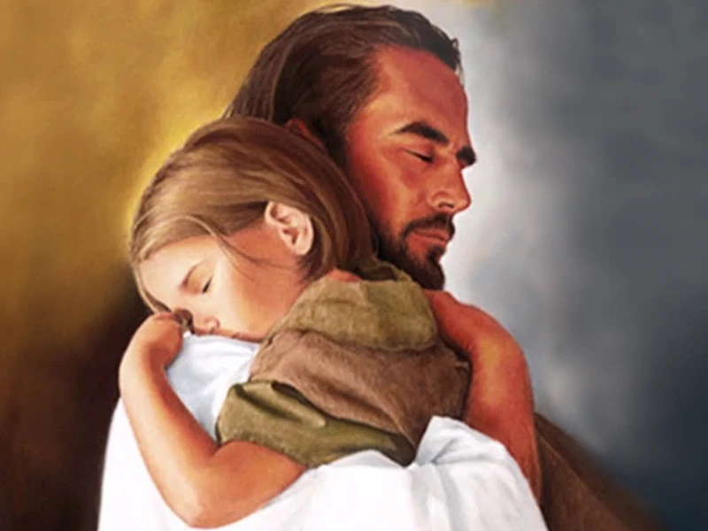
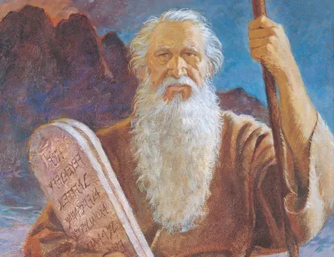
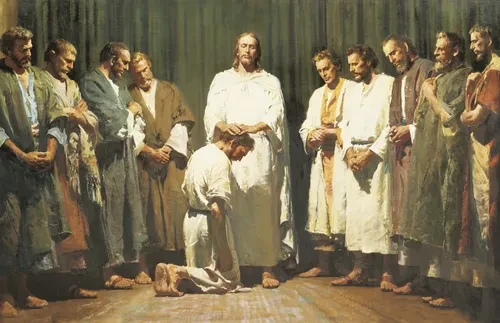
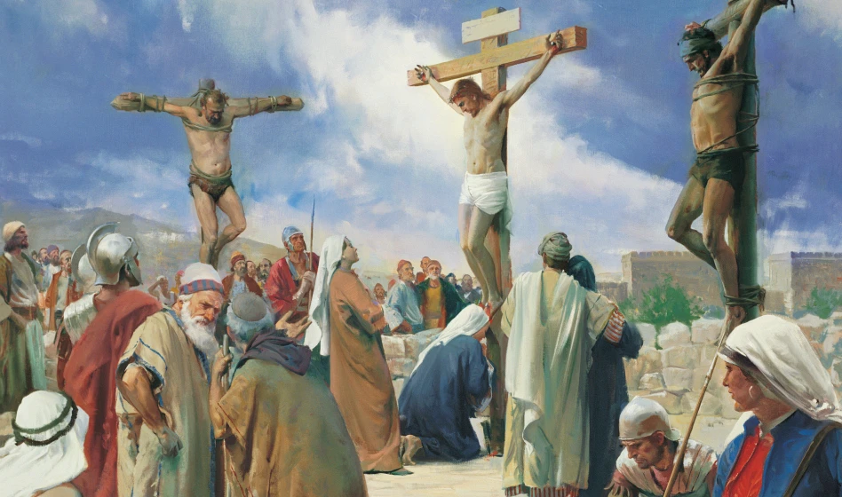
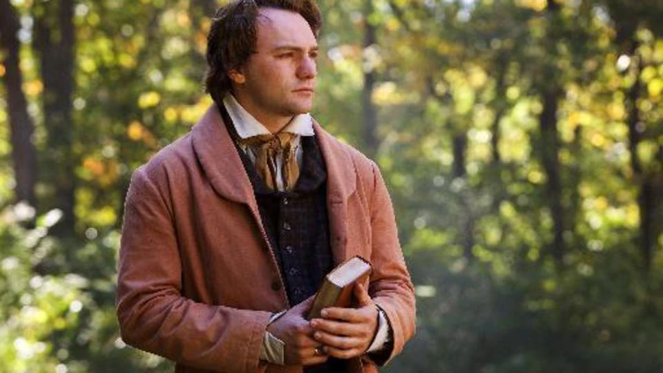

The Restoration
The First Vision
In the spring of 1820, a young man named Joseph Smith prayed in the woods near his home in the state of New York, USA. In response to his prayer, God the Father and Jesus Christ appeared to him. Following this revelation, Joseph Smith was called to be a prophet of the Lord, and the Restoration of the gospel of Jesus Christ began.
What Is the Restoration?
The "Restoration of the gospel" refers to Jesus Christ restoring the fulness of His gospel, priesthood authority, and the organization of His Church to the earth through the Prophet Joseph Smith and later prophets. The Restoration is characterized by a series of divine revelations, beginning with Joseph Smith's First Vision and continuing through modern prophets to this day.
Principles of the Restoration

Beloved God
God is our Heavenly Father. He is the Father of our spirits. He loves us perfectly and desires our happiness.
He has a body of flesh and bones that is glorified and perfected. His love is infinite and eternal.
"God so loved the world, that he gave his only begotten Son" (John 3:16)

Prophets
Prophets are called by God to speak His word. They are witnesses of Jesus Christ and testify of His divinity.
From Adam to modern times, God has always called prophets to guide His children.
"Surely the Lord God will do nothing, but he revealeth his secret unto his servants the prophets" (Amos 3:7)

Christ Ministry
Jesus Christ is the Son of God. His ministry on earth was a perfect example of love, service, and sacrifice.
He taught the gospel, performed miracles, and atoned for the sins of all mankind.
"For God so loved the world, that he gave his only begotten Son" (John 3:16)

Apostasy
The Great Apostasy was a turning away from the truth. After the death of the apostles, many plain and precious truths were lost.
People changed ordinances and doctrines, and priesthood authority was taken from the earth.
"My people are destroyed for lack of knowledge" (Hosea 4:6)

Joseph Smith
Joseph Smith was called as a prophet to restore the gospel. In 1820, he saw God the Father and Jesus Christ in the Sacred Grove.
Through him, the Book of Mormon was translated and the priesthood was restored.
"I saw a pillar of light... and I saw two Personages" (Joseph Smith History 1:16-17)
Pray
Prayer is a way to communicate with God. It is how we express our gratitude, confess our sins, and ask for guidance.
God always hears our prayers and answers them in His own time and way.
"Pray always, and not faint" (2 Nephi 32:9)